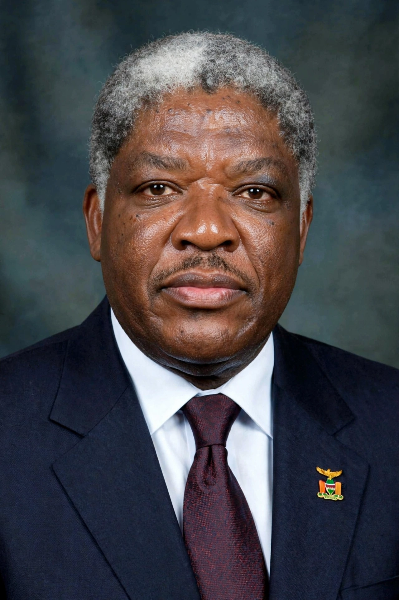

Levy Patrick Mwanawasa (3 September 1948 – 19 August 2008) was a Zambian politician who served as the third president of Zambia from 2002 until his death in 2008.

| Levy Mwanawasa | |
|---|---|
| President of Zambia | 2002–2008 |
| Born | 3 September 1948, Mufulira, Northern Rhodesia |
| Died | 19 August 2008, Paris, France |
| Party | Movement for Multi-Party Democracy |
A lawyer and former vice-president under Frederick Chiluba, Mwanawasa won the disputed 2001 election and was re-elected in 2006. He campaigned against corruption — including prosecuting Chiluba — pursued market reforms and debt relief, and oversaw strong copper-driven growth. He was an outspoken critic of Robert Mugabe's Zimbabwe.
Mwanawasa suffered a stroke in June 2008 and died in a Paris hospital; he was succeeded by Rupiah Banda. Lusaka's main hospital and stadium bear his name. See Zambia.